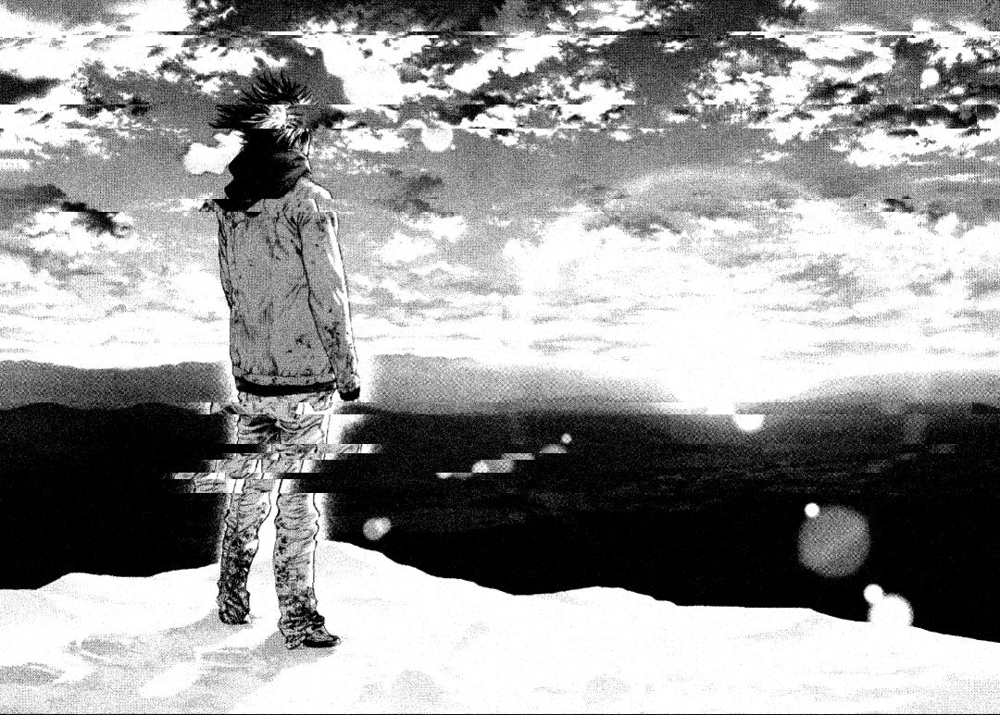
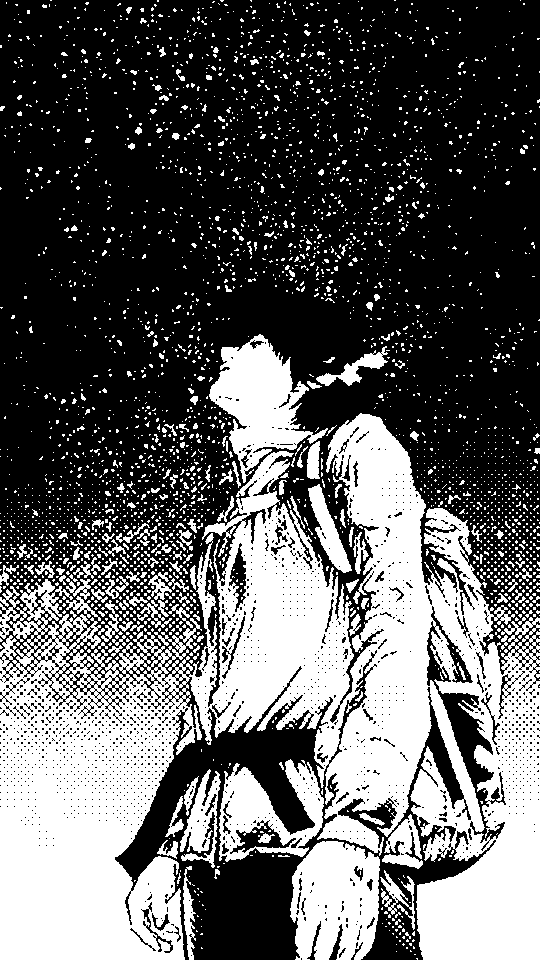
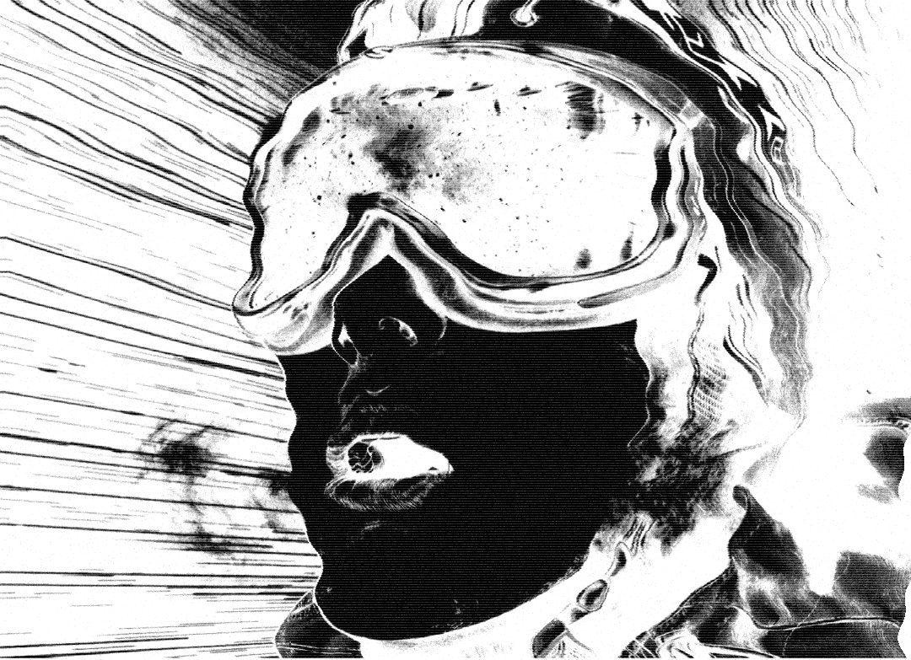

Sharan Senthil. I build things and I want to climb mountains. I have climbed zero so far.
I have climbed zero. Yet. This is my little corner of the web: projects, notes, and a running count of how many summits I've reached. Currently 0.



